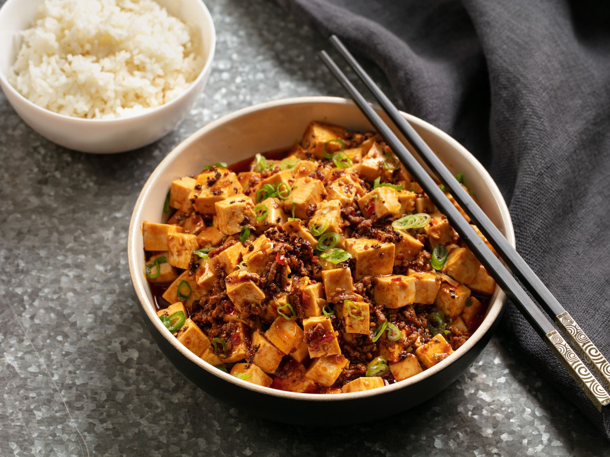

Mapo Tofu
Ingredients
- 2 tablespoons Sichuan peppercorns, divided
- 1/4 cup vegetable oil
- 1 teaspoon cornstarch
- 2 teaspoons cold water
- 1 1/2 pounds medium to firm silken tofu, cut into 1/2-inch cubes
- 1/4 pound ground beef
- 3 garlic cloves grated
- 2 tablespoons fermented chili bean paste
- 2 tablespoons Xiaoxing wine
- 1 tablespoon dark soy sauce
- 1/4 cup low sodium chicken stock
- 1/4 cup roasted chili oil
- 1/4 cup finely sliced scallion greens
How to Make this Mapo Tofu
- Heat half of Sichuan peppercorns in a large wok over high heat until lightly smoking.,
Transfer to a mortar and pestle. Pound until finely ground and set aside.
- Add remaining Sichuan peppercorns and vegetable oil to wok.
Heat over medium high heat until lightly sizzling, about 1 1/2 minutes.
Pick up peppercorns with a wire mesh skimmer and discard, leaving oil in pan.
- Combine corn starch and cold water in a small bowl and mix with a fork until homogenous.
Bring a medium saucepan of water to a boil over high heat and add tofu.
Cook for 1 minute. Drain in a colander, being careful not to break up the tofu.
- Heat oil in wok over high heat until smoking. Add beef and cook, stirring constantly for 1 minute.
Add garlic and ginger and cook until fragrant, about 15 seconds.
Add chili-bean paste, wine, soy sauce, and chicken stock and bring to a boil.
- Pour in corn starch mixture and cook for 30 seconds until thickened.
Add tofu and carefully fold in, being careful not to break it up too much.
- Stir in chili oil and half of scallions and simmer for 30 seconds longer.
- Transfer immediately to a serving bowl and sprinkle with remaining scallions and toasted ground Sichuan pepper.
Serve immediately with white rice.